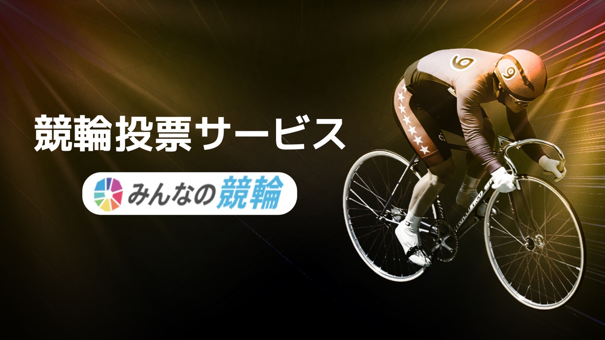

作品一覧へ戻る
みんなの競輪（公営競技 Web 投票・チャージシステム）
公営競技（競輪・PIST6）の車券投票・資金チャージ・会員管理を行う統合 Web サイトのフロントエンドを Next.js（App Router・55 ルート超）で実装。

概要
公営競技の車券投票・資金チャージ・会員管理を行う統合 Web サイトのフロントエンドを Next.js（App Router・55 ルート超）で実装。 別リポジトリの REST API（OpenAPI 仕様）と連携する SPA / SSR 構成で、コードレビュー・Storybook・CI による品質担保体制のもとでのチーム開発に参画しました。
技術的課題
- 複数賭式（単勝・複勝・枠単・3 連単・ワイド等）に対応した投票カートの配分・順列生成・払戻見積計算の正確性担保
- GMO マルチペイメント（クレジットトークン化）・PayPay・Wellnet（コンビニ）・Veritrans（ネットバンク）の複数決済フローを React Query で統合する非同期処理設計
- OpenAPI 定義とフロントエンド間のケース変換を含む、型安全な API 通信基盤の整備
主な担当
- Next.js 15 / TypeScript / styled-components による投票・マイページ・会員登録等の画面実装
- openapi-typescript による型自動生成と、Bearer JWT 認証・ケース変換を共通化した API 通信ヘルパーの整備
- 複数賭式対応の投票カート管理と配分・払戻計算ロジックの実装（Jest 単体テスト付き）
- 4 種の決済（GMO / PayPay / Wellnet / Veritrans）チャージフロー、LINE OAuth ログイン、本人確認書類アップロード機能の実装
- GitHub Actions（ESLint / Prettier / ビルド / テスト）による CI 整備、Storybook によるコンポーネント管理
成果
- 本番稼働中の投票サービスとしてリリース
- CI による Lint・ビルド・テストの自動実行体制を整備し、チーム開発の品質を担保